2025年12月
广播发布后不可编辑，所以每条都是那一刻的原话。
2025-12-31 18:00:16
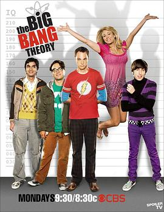
我天谢耳朵的演技也太精湛了。居然更喜欢penny与谢耳朵的关系。
2025-12-26 23:52:36
在看 生活大爆炸 第二季 / The Big Bang Theory Season 2 ★★★★★
我天谢耳朵的演技也太精湛了。
2025-12-25 23:56:28
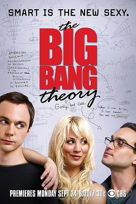
ep1的怪怪中文真难绷。好多讽刺好精妙哦。ep10里一个谎言要靠多个谎言来圆，hh。假表弟的表演还真蛮戏剧性的。谢耳朵最后的中文笑死我了。
2025-12-24 18:11:12
说

2025-12-22 14:32:06
在看 生活大爆炸 第一季 / The Big Bang Theory Season 1 ★★★★★
ep1的怪怪中文真难绷。
2025-12-19 23:01:12
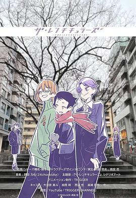
雨宫还是太懂JK和DK了。剧情怎么越来越胃疼了。最后一集何意味，金石女士就冒个头？
2025-12-15 16:51:24
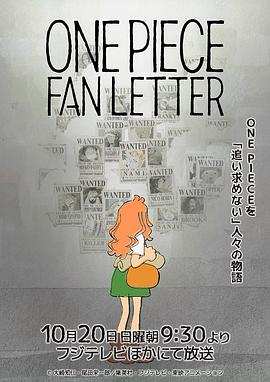
明明没看过长片却看完了这个短片，那大概是被作画给吸引了吧。
2025-12-13 17:20:17
看过 山河故人 ★★★★☆
没怎么在影院看过科长的电影，《风流一代》那会也没来得及看。画幅的变换用得很有意思，过去现在未来各司其位。挎大刀的小孩长大了，逝世的飞行员被家人烧纸悼念着，结果在未来这些都不见了，连中文对白都鲜有了，故人仍在山河边起舞。科长拍的镜头还蛮好看的，颜色质朴构图明朗，几处古塔的远景很美，我涛姨也很美。只是最后的忘年交太意外了，董子健的痞里痞气是自带的么。
2025-12-13 12:55:13
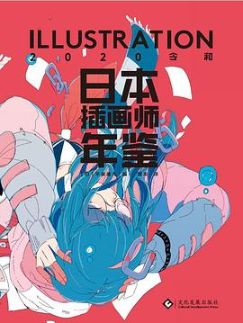
教我震惊的是居然还有很多画师是传统纸笔作画的，完全不见数码的踪迹。最后见到了几个熟人的画作。
2025-12-12 20:47:12
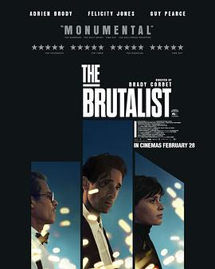
一开始不明白为什么使用这么大的画幅拍，之后才了解到VistaVision这项技术，也经后才发觉摄影的美轮美奂。开头Toth在船舱乱走出来之后自由女神像举着火把戳进画面里真教人眼前一亮。书房里抽烟难怪被人喷。合影与幕间结合很有新意，落幕的演职员表的展出也特立独行令我印象颇深了。指控时那一段的长镜头调度很好，其实rape时真震惊我一脸。十字架这个包袱抖出来时我震惊，假使真有这么一位建筑家把自身的经历不知不觉地融进建筑的造型里也是蛮厉害的。典型的知识分子碍于民族性悲歧视，又因歧视回归民族里。
2025-12-12 13:56:39
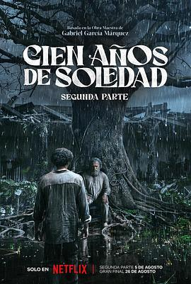
2025-12-12 00:15:24
看过 鱼之子 / さかなのこ ★★★★☆
冲田在转场上看得出来花了很多心思，在我最意想不到的地方结了尾。开头给鱼刷过牙之后再切玲奈刷牙也太恶趣味了。整篇故事到底太理想，但现实也体现了，譬如那个鱼叔叔最后也不知道在海边干些什么。母亲也太心大了，居然很随便地允许孩子去一个陌生成年男子家。正因为镜头对准孩子所以有些穿帮是可以接受的么。题外话，玲奈的眼睛可真亮真好看呀。
2025-12-12 00:09:42
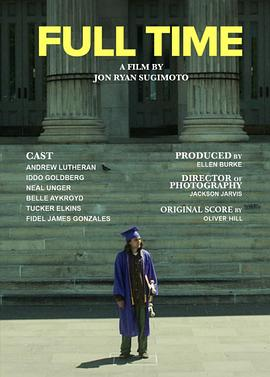
讲道理，和滑板没多大关系了。
2025-12-09 14:53:35
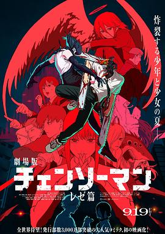
龙哥说真心话想你了。这下真真只看打斗画面了。レゼ的声音常常令我幻视到茜身上。
2025-12-09 09:11:38
听过 New PANTY & STOCKING with GARTERBELT The Soundtrack ★★★★★
喜欢宅男の小曲。FFF LAND也很不错。另外喜欢26号。
2025-12-08 22:20:57
想听 New PANTY & STOCKING with GARTERBELT The Soundtrack
2025-12-08 22:20:35
听过 Panty & Stocking with Garterbelt The Original Soundtrack ★★★★★
好电子。尤其喜欢《CHOCOLAT》这一首，中间的念词很伤人。
2025-12-08 22:20:19
看过 新吊带袜天使 / 新しいパンティ＆ストッキングwithガーターベルト ★★★★★
在这里我要重申一下，扳机社是我的神！用裆下喷气机归还燃烧之物也太生草了吧。这么大型的特摄风的打斗话说居然不是我哲哥的手笔么。多元化，区区五分钟思潮转变二十年有余，唏嘘呀。ep3打趣《速激》永远是家人的故事真是笑死我了，但保罗的经典分镜再现时我耳边响起的却是《see you again》。ep4里我海哥还是没放得开，收敛了。ep8中哲哥居然又用的是皮影戏式的动画，这是何等的华丽啊，南三无。这里Alexis居然是正派了笑死。另外有点想尝尝舌头刺青了ort。最后实话讲是真心磕Party和Brief这一对的。ep13没怎么支棱得起来哦。
2025-12-07 22:23:04
在看 新吊带袜天使 / 新しいパンティ＆ストッキングwithガーターベルト ★★★★★
在这里我要重申一下，扳机社是我的神！用裆下喷气机归还燃烧之物也太生草了吧。这么大型的特摄风的打斗话说居然不是我哲哥的手笔么。多元化，区区五分钟思潮转变二十年有余，唏嘘呀。
2025-12-07 22:16:59
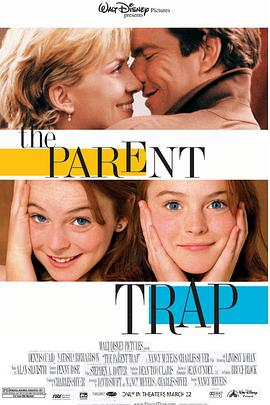
两位小姑娘把“小大人”的气质演得很好，尤其颇多装成熟的行为里充满本质稚气的感觉。只是结尾里旧情复燃在前面大手笔的叙事下还算讲得过去，只是于我来说还是庸俗了。摄影很漂亮，蛮会抓重心的。
2025-12-07 16:29:12
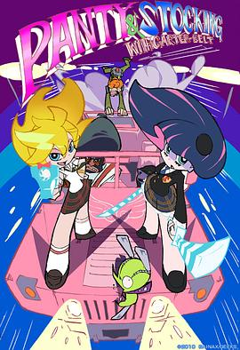
好别致的美术风格。以前的G社真是太强了。面巾纸当飞机轰炸脑洞也太大了。ep5一转攻势从现实起手真让人吃不消。三渲二的技术真是强得可怕。ep7开头的故事让雨宫老哥爽了不止一点吧，人物与背景连续的演出风格那时候就初见端倪了。ep9里Stocking爱一个人的眼神真是藏不住的，尤其那轻轻的一声答应下来接着悲伤的收场很教人伤心的。ep12里Brief居然这么帅的么，鱼缸相见的戏很浪漫了。ep13中高跟鞋踩与调教也太直白了吧！就算在有第二季的情况下看这个结尾依旧无厘头得没边。
2025-12-07 14:34:34
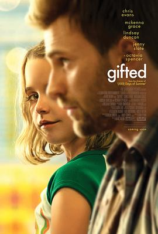
小姑娘表演亮眼。
2025-12-06 16:57:31
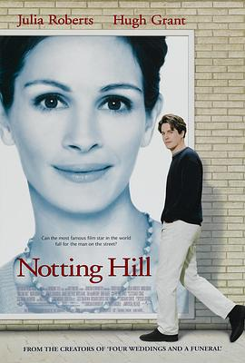
中间那一段天气变换的长镜头很好，休的眉目真是好帅哦。整体来说真真是一部性转的灰姑娘的故事，但叙述着爱情多么美好还是蛮并不容易的不是么。最羡慕不过那群好朋友们。
2025-12-06 00:06:45
看过 芳华 ★★★★☆
冯裤子还是厉害，好多长镜头的场面调度教人叹为观止，尤其那个草丛起战的长镜头的展现功力老练。另外还有小萍与战友们一同厅内野外共舞的平行蒙太奇表现也很好。所谓靡靡之音却也很好听，最后海口的那段意思还蛮明显的。
2025-12-05 17:31:11
看过 暗恋桃花源 / 暗戀桃花源 ★★★★★
轮椅在原地打转。赖声川居然不仅在画面上表演上使用间离手法，甚至声音也是的。看到滨柳躺在床上听着过去的音乐怀念过去，我总害怕我老了也会这样，而这音乐带来的蒙太奇是充满才气的。但相应的江太太的叙述回忆里滨柳市缺位的不在场的，暗恋就会带来这样的残忍。最后老陶听见孩子哭声拔不开盖子的，和滨柳最后一样道心破碎了：明明台北并不比上海大多少，甚至不足一条马路远，几十年了居然便遇不见了。
2025-12-05 00:16:25
看过 看球记 ★★★☆☆
五分钟时间里镜头都有调度，台词很快活，比兔年那个广告好看多了。
2025-12-04 23:57:03
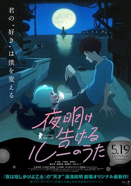
依旧是汤浅标志性的大透视画面设计，再加之魔性的舞蹈真是喜闻乐见。海狗好可爱又搞笑。故事上永远是亲情更容易打动人，当大鲨鱼听见露的恐惧时，不顾全身火焰也要奔过去的场面让人动容；两次的人鱼遇见人类，最动人的爷爷终于明白了一直还琴的是他的母亲，而有活力的长枪婆婆也遇见了她的情人。不过海对露的表白真是必要的么。最后结局留白，教我胡思乱想。
2025-12-04 21:54:55
读过 義妹生活 ★★★☆☆
同桌推荐我看的，这应该属于轻文学了？
2025-12-04 17:19:06
在听 Panty & Stocking with Garterbelt The Original Soundtrack ★★★★★
好电子。尤其喜欢《CHOCOLAT》这一首，中间的念词很伤人。
2025-12-03 15:47:31
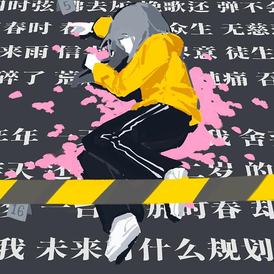
最后一句跳脱欢快实际却为世上最难问题。
2025-12-03 15:42:08
听过 一万万 ★★★★★
曲调很动听，尤其词很动人。
2025-12-03 15:39:24
听过 心跳叮叮咚 ★★★★☆
mush音游曲。
2025-12-02 10:35:50
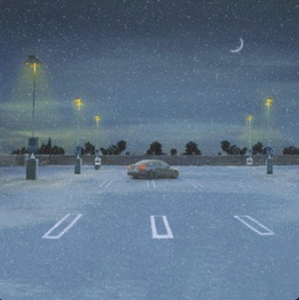
嗓音沉沉的，好听。
2025-12-02 10:30:57
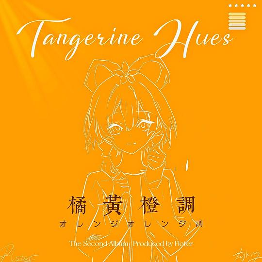
似乎很喜欢重章叠句，但曲调与之前无差，没有特色了。
2025-12-01 09:22:13
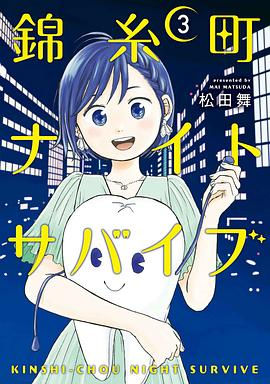
结局也是从稀松的日常停笔，小夏好乐观。
2025-12-01 09:21:12
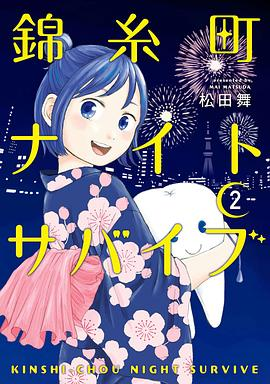
还是好像个小孩子。牙医的知识作为科普还是不错的，酒会的场景里人还是太好了。有很多走心的画面。
2025-12-01 09:11:24
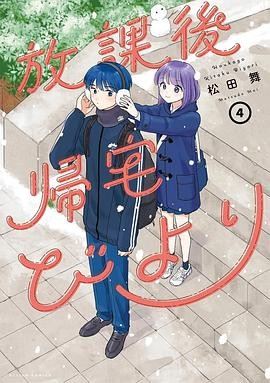
肢体接触变多了捏，依旧脸红着打闹，但回家部活动似乎变少了哦。辣妹登场了，PPT做得那么认真她做什么都会成功的。丸子头有点像哪吒。
2025-12-01 08:55:18
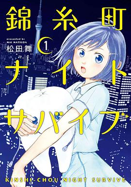
可怜的小妹也太能闯祸了。其实故事开始便是忧伤的起笔，为了梦想走进异地还得靠老乡接济。
2025-12-01 00:21:27
读过 放課後帰宅びより (3) ★★★★☆
画风很简单，这部里感情的升温逐渐成了肢体大胆接触的具象。
2025-12-01 00:20:00
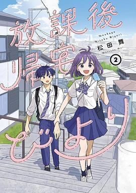
能说实际上我觉得部长有些像春日了么。
2025-12-01 00:19:26
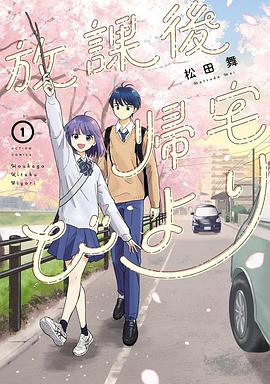
对古灵精怪与恋爱之间的一种幻象，倒是对浪漫元素的追求蛮让人着迷的。